Player Builds Progression (All 10 Professions)
Your own 8-skill bar matters differently as your account matures. Through Level 10, your damage carries early henchmen cleanly; once you assemble a 7-Hero squad, your job shifts to calling targets, supplying burst damage or party buffs, and dropping key PvE-only skills. Below is the complete staged progression for our recommended Ranger starter followed by proven meta PvE templates for all other nine professions.
Player Build & Unlock Checklist 0/0 (0%)
-
Ascend / Unlock Secondary Profession Switching: Reach Closer to the Stars / Nahpui Quarter (Factions, fastest at Level 10 to 12), Hunted! / Consulate Docks (Nightfall), or Augury Rock (Prophecies) so you can swap your secondary profession freely in any outpost.
-
Buy Signet of Capture Early: Grab
 Signet of Capture (250g + 1 Skill Point) from Firstwatch Sergio in Lion's Arch, Michiko in Kaineng Center, or Pikin in Kamadan.
Signet of Capture (250g + 1 Skill Point) from Firstwatch Sergio in Lion's Arch, Michiko in Kaineng Center, or Pikin in Kamadan.
-
Craft Max AL Armor (AL 60/70/80) in Kaineng Center: Visit Armorer Ryoko, Kakumei, or Suki in Kaineng Center for full-slot Max Armor plus a +1 Primary Attribute Headpiece, then socket Minor/Major runes and a Vigor rune.
-
Unlock Core Eye of the North PvE Skills: Pick up
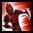
Ebon Vanguard Assassin Support (Doomlore Shrine, Ebon Vanguard track),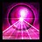
Asuran Scan (Rata Sum, Asura track), and "I Am Unstoppable!" (Gunnar's Hold / Sifhalla, Norn track).
"I Am Unstoppable!" (Gunnar's Hold / Sifhalla, Norn track).
 Ranger Progression (Walkthrough Starter)
Ranger Progression (Walkthrough Starter)
Why Ranger for Beginners: Ranger armor grants AL 70 plus a built-in +30 Armor Rating against Elemental damage (cutting fire and lightning damage from Charr casters), Expertise slashes the Energy cost of bow attacks, survival skills, and Assassin daggers alike, and 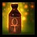 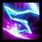 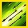 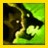 Fire Storm AoE before scaling into zero-Proof
Fire Storm AoE before scaling into zero-Proof
Stage 1 (Levels 1 to 10 – Pre-Searing & Early Ascalon): R/E Fire Storm & Stalker Bow
Attributes: Marksmanship 7, Fire Magic 6, Wilderness Survival 4, Expertise 4. Let your tamed Melandru's Stalker pet ( 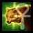 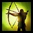 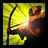 Glyph of Lesser Energy into
Glyph of Lesser Energy into  Fire Storm onto balled Charr, weave
Fire Storm onto balled Charr, weave
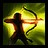
Read the WindStage 2 (Levels 10 to 20 – Normal Mode Clear, No Proof Needed): Barrage Bow (R/any)
Attributes: Marksmanship 12+1+1 (14), Expertise 12+1 (13). Capture Barrage from Commander Kubeh during The Great Escape in Kourna (or Aurora in Boreas Seabed) and buy the remaining skills from Michiko (Kaineng Center) and Shiloh (Sunspear Great Hall). Fire Barrage into adjacent foes (devastating once a Hero pairs 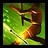 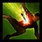 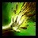 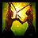 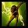 Splinter Weapon with it; note Barrage removes active Bow Preparations like Read the Wind), interrupt key casters with
Splinter Weapon with it; note Barrage removes active Bow Preparations like Read the Wind), interrupt key casters with
Stage 3 (Endgame Hard Mode & Proof of Triumph): "Together as One!" Dagger Spammer (R/A)
Attributes: Expertise 11+1+3 (15), Dagger Mastery 12, Beast Mastery 6+1 (7). Capture "Together as One!" from Wickediko the Whispering in Sacnoth Valley while a party member carries a Proof of Triumph, and craft Req 9 Sai daggers at Weaponsmith Manzo in Kaineng Center (5,000g + 40 Iron Ingots + 6 Steel Ingots). The shout turns your Ranger into both an endlessly spamming melee cleave carry and a massive +15 attack damage aura for your pet, Heroes, and summoned spirits. Without a Proof of Triumph yet, either stay on Stage 2 Barrage + Splinter Weapon or swap the elite slot to Ebon Vanguard Assassin Support.
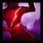
Jagged Strike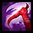
Fox Fangs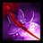
Death BlossomMeta Endgame PvE Builds for All Other 9 Professions
If you start or replay another class, use these current PvX meta templates designed to anchor a 7-Hero squad cleanly.
 Warrior: Seven Weapons Stance (W/any) & Hundred Blades
Warrior: Seven Weapons Stance (W/any) & Hundred Blades
Attributes: Strength 12+1+3 (16), Hammer Mastery 3+1 (4) (or Swordsmanship 12+1+3 on Hundred Blades). Popping 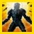 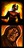 Hundred Blades +
Hundred Blades +
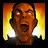
"For Great Justice!"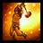
Crude Swing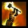
Auspicious Blow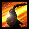
Power Attack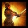
Protector's StrikeElementalist: Elemental Attunement Fire & Invoke Lightning (E/any)
Attributes: Fire Magic 12+1+3 (16), Energy Storage 12+1 (13). Energy Storage grants a deep energy pool for continuous AoE spellcasting once past Pre-Searing (early on, take care around Charr Chaots because Shatter Enchantment strips 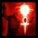 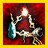 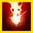 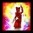OgBSgYGT4gAaLgKNAAAAhDugA from General Tirraj) plus Reforged Q3 2026 PvE skill
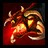
Rodgort's Invocation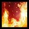
Incendiary Bonds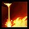
Liquid Flame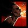
Intensity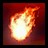
Fire AttunementMonk: Unyielding Aura Backline Healer (Mo/any)
Attributes: Divine Favor 12+1+1 (14), Healing Prayers 12+1 (13). While solo leveling in Prophecies, run Smiting Prayers with 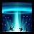 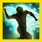
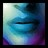
Dwayna's Kiss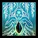
Seed of Life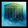
Heaven's DelightNecromancer: Assassin's Promise Death Caller (N/A)
Attributes: Death Magic 12+1+3 (16), Soul Reaping 8+1 (9), Deadly Arts 10. Tag weakened targets with 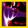
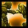
"Finish Him!"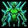
MasochismMesmer: PvE Energy Surge Domination (Me/any)
Attributes: Domination Magic 12+1+3 (16), Fast Casting 12+1 (13), Inspiration Magic 3. Copy 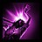 Energy Surge with
Energy Surge with  Arcane Echo to open fights with back-to-back armor-ignoring AoE spikes while
Arcane Echo to open fights with back-to-back armor-ignoring AoE spikes while
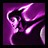
Auspicious Incantation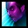
Cry of Frustration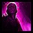
Air of SuperiorityAssassin: Way of the Assassin Dagger Spammer (A/W)
Attributes: Dagger Mastery 12+1+3 (16), Critical Strikes 12+2 (14). The cleanest general-purpose melee powerhouse in Guild Wars: chain Jagged Strike, Fox Fangs, and Death Blossom endlessly while feeding adrenaline into "Save Yourselves!" for +100 team armor.
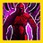
Way of the Assassin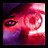
Critical EyeRitualist: Signet of Spirits Spammer (Rt/any)
Attributes: Channeling Magic 12+1+3 (16), Spawning Power 12+1 (13).  Signet of Spirits spawns three attacking spirits in one cast, Summon Spirits pulls and heals your entire wall into every pull, and Painful Bond adds armor-ignoring burst to every spirit bolt.
Signet of Spirits spawns three attacking spirits in one cast, Summon Spirits pulls and heals your entire wall into every pull, and Painful Bond adds armor-ignoring burst to every spirit bolt.
Paragon: Heroic Refrain Shout Leader (P/any)
Attributes: Leadership 12+1+3 (16), Command 10+1 (11), Spear Mastery 8+1 (9). Casting Heroic Refrain (captured in Nightfall at The Ruptured Heart with a Proof of Triumph) pushes yourself and every Hero to Rank 20 Attributes, unlocking massive party damage and near-invincibility through echoed shouts.
 Dervish: Pious Renewal Teardown Scythe (D/any)
Dervish: Pious Renewal Teardown Scythe (D/any)
Attributes: Scythe Mastery 12+1+3 (16), Mysticism 11+3 (14), Earth Prayers 6+1 (7). Maintain Dervish flash enchantments (Pious Fury, Mirage Cloak, Heart of Holy Flame) and strip them instantly via Pious Renewal for looping AoE scythe cleave, healing, and endless energy.
Quick-Reference Player Build Matrix
| Profession | Flagship Build | Primary Role | Elite Capture / Acquisition | Template Code |
|---|---|---|---|---|
| Elementalist | EA Fire / Invoke Lightning | AoE Caster DPS | Chung, the Attuned / General Tirraj | OgBSoYGTCD9CzCNNAA4gkC4CA |
| |
Seven Weapons Stance | Frontline Cleave & KD | Blade Ancient Syu-Shai (Proof of Triumph) | OQASE55QAAhFJOCFGFi1vl0kA |
| |
Barrage / "Together as One!" Daggers | AoE Bow / Melee + Party Buff | Commander Kubeh / Wickediko (Proof) | OgcTYt72Zyhhh5gBAAAgHcsm2A |
| Monk | Unyielding Aura Healer | Pure Party Healer | Tarnok, Chosen of the Gods (Abaddon's Mouth) | OwAS0YITMEbENg5gfPXEdRAAA |
| Necromancer | Assassin's Promise | Resetting PvE Bomber | Achor the Unseen / Whisper of Doom | OAdTUYD6VSBcXcBKmkKAAAAYLE |
| Mesmer | Energy Surge Domination | Armor-Ignoring Spike | Varny the Zealot / Mursaat Mesmer | OQBTAYBPGS0ZJ4EY6x0BAAAAuE |
| Assassin | Way of the Assassin Daggers | Single & AoE Melee Carry | Kenshi Steelhand (Raisu Palace) | OwFi0xjM5wwwcw8WCAAAEnp/A |
| Ritualist | Signet of Spirits Spammer | Solo & Team Spirit DPS | Wagg Spiritspeak (Ferndale) | OACiIykMdNVO5DWNRDyMBAAAA |
| Paragon | Heroic Refrain Spear | +4 All Attributes Team Anchor | Yoannh the Rebuilder (Proof of Triumph) | OQCjUimKKTzk1b7Y1YubAh0bn1A |
| |
Pious Renewal Scythe | Cleave Melee + Sustain | Jishol Darksong (Bahdok Caverns) | OgCjkyrG7SbXSXRXPXAAihcXygA |